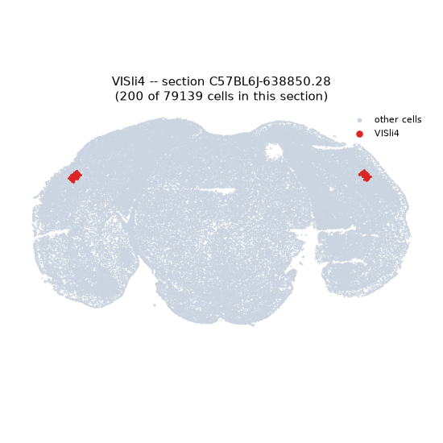
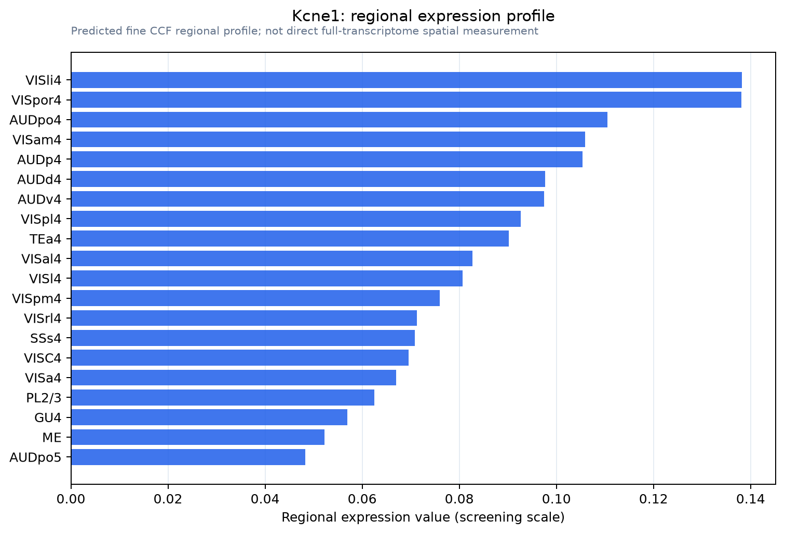

Kcne1
Potassium voltage-gated channel subfamily E member 1 (Delayed rectifier potassium channel subunit IsK) (mISK) (IKs producing slow voltage-gated potassium channel subunit beta Mink) (Minimal potassium
Spatial tier: RESTRICTED · Class: ION_CHANNEL · Top region: VISli4 (Laterointermediate area, layer 4) · Positive regions: 28/554
47.2Discovery Score
33.9Targetability Score
CEvidence grade C
What this means: Kcne1: fine CCF profile is restricted toward VISli4 (top regions: VISli4, VISpor4, AUDpo4, VISam4, AUDp4; 28 positive regions); direct spatial validation is still required.
Function in VISli4: evidence, prediction, innovation
- Gene function
- Kcne1 encodes minK (IsK), a single-transmembrane beta subunit with no pore of its own. It binds pore-forming Kv alpha subunits and dramatically changes their behaviour: with KCNQ1 it generates the slow cardiac IKs current, and it also modulates Kv12.2, Kv4.3 and hERG. Human mutations cause long-QT syndrome and, with deafness, Jervell and Lange-Nielsen syndrome.
- Region function
- The laterointermediate area is a small higher visual area in mouse lateral extrastriate cortex; its layer 4 is the main thalamorecipient layer, receiving input from the lateral posterior nucleus and V1, and it contributes to object and motion processing in the ventral-stream-like pathway.
- Published in this region
- inferred No region-specific literature found. The most relevant neuronal result is Clancy 2009, who showed that KCNE1 and KCNE3 regulate surface expression of Kv12.2 channels and form a tripartite complex in vivo, providing the main evidence that minK has a genuine neuronal partner; otherwise KCNE1's established roles are cardiac (Bett 2006; Abbott 2016) and inner-ear, and the Kcne1-null mouse is known for vestibular and hearing defects (Piccini 1999).
- Predicted function
- Prediction: in layer 4 neurons of a higher visual area, KCNE1 would act as a tuning subunit for a subthreshold potassium current, most plausibly Kv12.2 or a KCNQ, slowing its activation and raising the threshold for repetitive firing, and thereby sharpening the gain and adaptation of thalamorecipient cells. Kcne1 deletion is predicted to increase intrinsic excitability and reduce spike-frequency adaptation in layer 4, broadening visual responses and weakening adaptation to sustained stimuli; the vestibular and hearing deficits of Kcne1-null mice mean conditional cortical deletion is the cleaner experiment.
- Innovation
- ★★★★★ 5/5 A cardiac and inner-ear channel subunit concentrated in a specific higher visual area is an unexamined and easily testable claim, with knockout mice and layer 4 driver lines both available.
- Tools
- Kcne1 knockout mice (the classic shaker/waltzer inner-ear phenotype); IKs blockers chromanol 293B and HMR-1556 and the KCNQ1 activator ML277; anti-KCNE1 antibodies; layer 4 accessible with Scnn1a-Tg3-Cre (JAX 009613), Nr5a1-Cre (JAX 006364) and Rorb-IRES2-Cre (JAX 023526).
- References
Direct evidence located at the region
No Allen ISH section could be located at this region's centroid for the recorded experiments.
Look it up yourself: Allen Mouse Brain ISH for Kcne1Allen reference atlas: VISli4 (structure 312782586)ABC Atlas MERFISH viewer(in the ABC Atlas choose dataset MERFISH-C57BL6J-638850-CCF, colour cells by gene "Kcne1" or by parcellation_substructure "VISli4")All genes confined to VISli4 + 3-D brain
Direct spatial evidence
MERFISH REGION LOCATOR

Regional expression figure

Predicted WMB × fine-CCF profile; not direct full-transcriptome spatial measurement.
Spatial profile
Evidence and specificity
- Evidence status
- PREDICTED_FINE
- Direct sources
- None; predicted localization only
- Exclusive threshold
- 12 positive regions out of 554
- Spatial specificity
- 0.305
- Top-region fraction
- 0.045
- Filter status
- PASS
Interpretation limits
- Cell-type-to-region projection is imputed expression, not direct spatial measurement.
- Adult reference atlases do not establish stability across age, sex, strain, state, or disease.
- Transcript abundance does not guarantee protein abundance or genetic-tool performance.